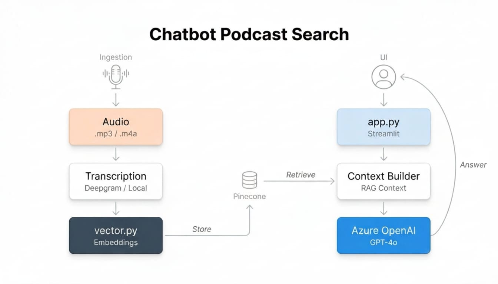
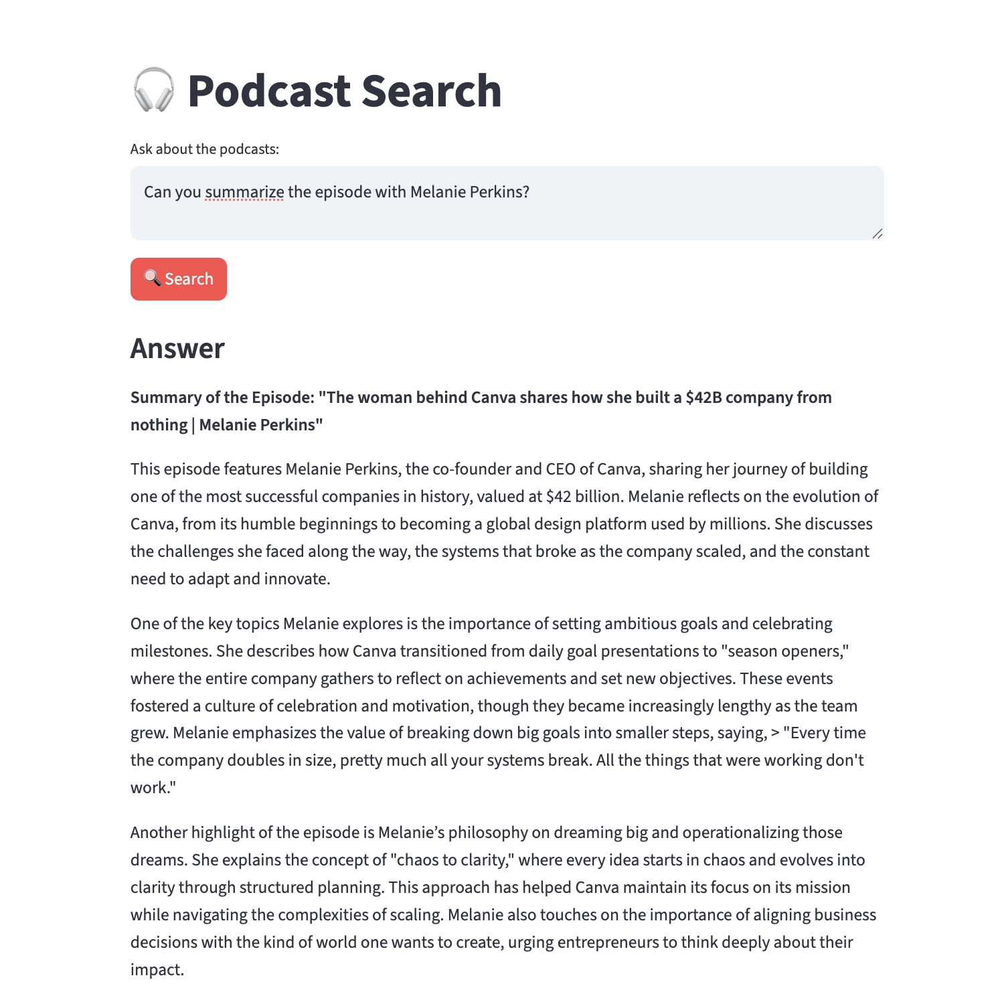

Podcast Intelligence:
RAG-Powered Q&A Chatbot
A full retrieval-augmented generation pipeline that turns hours of audio content into a searchable knowledge base, letting users ask natural language questions and get cited, accurate answers in seconds.


Podcast content is unsearchable by default
Hours of podcast content contain expert knowledge, case studies, and frameworks that listeners can rarely retrieve when needed. Standard keyword search doesn't work for audio, and even transcripts are hard to navigate.
The question this project set out to answer: what does it actually take to make an audio corpus queryable? Not just searchable by keyword, but genuinely answerable in natural language, with the source visible and defensible.
This is the same problem enterprise teams face with internal knowledge bases. Podcast content is a proxy for any large, unstructured, domain-specific corpus.
Audio is the least accessible knowledge format
You can Ctrl+F a document. You can't Ctrl+F a podcast. Hours of expert insight sit locked in a format that's nearly impossible to query precisely.
This scales to any unstructured corpus
The same pipeline works for internal meetings, sales calls, support transcripts. Podcast content is the testbed. The pattern generalises everywhere.
From audio to answer: the full pipeline
The pipeline has two phases: ingestion (audio to indexed embeddings) and retrieval (query to cited answer). Both phases have distinct product design decisions embedded in them.
“The chunking strategy is a product decision, not a technical one. It determines what the model can and cannot retrieve, which determines what questions the product can and cannot answer.”
What this taught me about RAG design
The corpus is the product
A RAG system is only as good as its indexed content. Chunk quality, metadata richness, and index freshness are the real product surface, not the LLM or the UI.
Citation is the evaluation mechanism
Showing sources forces honest evaluation. If the retrieved chunk doesn't actually support the answer, that gap is immediately visible. Sourceless AI answers hide failures.
- Transcription quality is upstream of everything: Bad transcription produces bad embeddings. Deepgram's accuracy was material to retrieval precision.
- Chunk overlap is a precision/recall tradeoff: More overlap means better cross-chunk context but higher cost and slower retrieval. This is a product spec decision.
- Metadata filters unlock precision retrieval: Being able to filter by episode or speaker means the user can ask "what did [guest] say about X" and get a precise answer.
- The test is 30 real questions: Before declaring the system ready, I asked 30 natural questions and read every answer with the source side-by-side. Aggregate metrics missed failures that hand review caught.